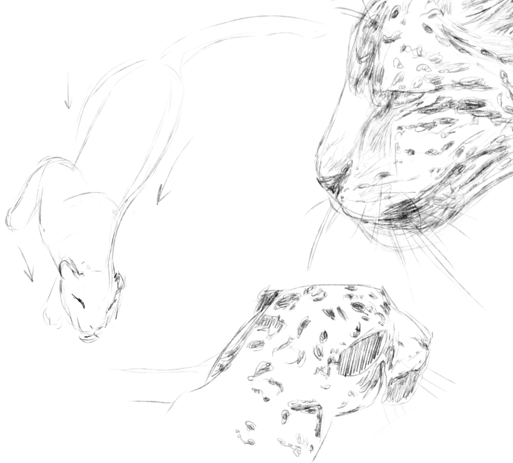

The Jaguar, Panthera onca, is a well-muscled and wide-ranging predator with distinctive genetic continuity, consisting of four major, somewhat differentiated groups. It is divided into nine subspecies based on skull characteristics, however they are not modernly justifiable.
Their skull is characterized by a wide snout and cheek bones, with a prominent sagittal crest in notably males. Relative to other extant pantherines, the lower canines are larger and push into the skull, and while the modern jaguar displaying reduced length, these canines are larger than other pantherines, competing with the clouded leopard for its powerful bite, and more powerful than other cats. Their legs are relatively short, though the largest extant cat of the Americas, to body size.
An adult's coat is pale yellow, tan, or reddish yellow in coloration, with circular black patterns in rosettes containing tiny spots. This is sometimes used to identify jaguars from other spotted cats, however it should not be depended on because coats vary widely. Their ventral body, neck, belly, and limb insides are all whitish. The undersides of their tails are also white, with black bands around the tail until it reaches the black tip. Because of a dominant gene variation, the jaguar has more melanistic features than other big cats save leopards. To add to the confusion, these nearly all black cats are informally referred to as black panthers, or just panthers, which also refers to pumas and the genus (which pumas are not members of) in general.
Their streamlined bodies allow them to chase their food on land, albeit they fatigue fast at full speed, and their formidable jaws allow them to grab their prey. The jaguar's short and stocky physique also makes it an adept climber and swimmer. They are quite comfortable in water and have strong attachments to water-rich environments, where they will frequently use it to remain cool as well as deep dive to seek aquatic prey.
Jaguar photo (right) by Jaap Vink